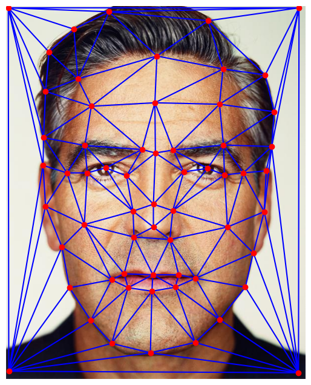

Points on Face 1

Points on Face 2
In this section, I select corresponding points between two faces. These points define key facial features such as the outline of eyes, nose, mouth, etc. allowing us to establish a triangulation for morphing. In order do this, I used the tool linked on the project spec. The points shown below are what serve as a basis for computing a triangulation mesh using Delaunay Triangulation, I then use the triangulated correspondance points to comute a warp which is carried out in the next part. the face geometrically.
Points on Face 1
Points on Face 2
Points on Face 1
Points on Face 2
In this section, I use the correspondance points from Part 1, to compute the average geometry between two faces by averaging their correspondances I then compute the affine transformation matrix to go from the triangulated geometry of the mid-way face to the original images. These matricies are then used to morph each of the faces into this mid-way shape. Then I carry out interpolation in order to set the color of the pixels in the images..

Face 1
Midway Face
Face 2
T&F: Khang

T&F: Khang+Chuk

T&F: Chuk
Lamarr
Mid-way face of Lamarr and King Von
King Von
In this section, I generate a sequence of frames that gradually morphs one face into the other. The transition is controlled by linearly warping the geometry and cross dissolving the colors of the pixels, creating a smooth animation between the two faces. To accomplish this, I added a warp_factor and dissolve_factor parameter to my function that generates the mid-way face. Then, I created a range of these values from [0, 1] with 45 steps in order to create a transition with 45 frames. I then compiled all of these 45 frames into a gif to display the morphing sequenece.

Morph of Face 1 and 2
Morph of Face 1 and 2

Morph Sequence between Lamarr and King Von
Morph Sequence between Khang and a rat
In this section, I compute the average face of a population retreived from the dataset linked on the project spec. To accomplish this, I first average all of the correspondance points of all the images in the dataset in order to get the average shape. I then create a triangulation of this shape and warp all of the faces in the dataset to this geometry. I average all of the outputs at the end to get the "mean face" of the population at the end. by morphing several faces into the mean geometry of the group. I then define new correspondances on this mean face and my face in order to warp my face into that of the average of the population.
Examples of one face from the dataset.
Example face 2.

Example face 3.
Examples of faces warped into the the "Mean Face" of the Population.

The "Mean Face" of the Population

My Face Morphed into the Mean Face and Mean Face Morphed into me.
In this section, I create caricatures by extrapolating from the mean face. In order to do this, I utilized the same morphing function that I had, but I set the warp_factor = -0.5 to get more of my face's geometry and 1.5 to get more of the average face's geometry.
Caricature by Extrapolating from the Mean Face
In this section, I attempt to change the gender of my face by utilizing an image of the average Dutch woman. I define correspondances between this image and my image and then warp my face's geometry into the geometry of the average Dutch woman. I also warp the geometry of the average Dutch woman into my geomtry as well, and then morph both the shape and appearance.
My face

Average Face of Dutch Woman
Morphing just the shape
Morphing just the appearance
Result of no warp and some cross dissolve

Morphing both shape and appearance
Accidently set dissolve_factor=6.0 but it ended up looking cool so I decided to share it.